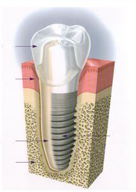
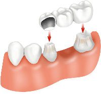
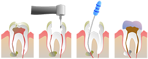
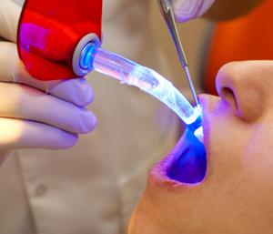
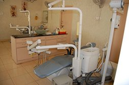

Dental Surgery in India at Affordable Cost
Plan your Dental Surgery in India with Indian Healthguru Consultants
Everybody dreams of a bright white smile and most of us take good care of their teeth. But not all are lucky to have the picture perfect teeth and may need a good dentist to flaunt that adorable smile freely. Indian Healthguru is a medical value provider in India providing access to the best dental surgeons in India, at affordable rates.
How things function at Indian Healthguru Group:
- Primary facilities: Indian Healthguru helps in arrangement of medical visa, to and fro airport service, accommodation, meals, appointment with surgeon, lab tests etc.
- Skilled panel: Indian Healthguru has network of the best surgeons and hospitals, providing supreme healthcare in India.
- Budget-friendly: What is the cost of dental surgery in India? The expenses incurred in the entire travel for dental surgery are nearly 30% of the costs in the Western countries
- Professionalism: We maintain highest ethics in providing the treatments and the procedures are followed with transparency.
- Other vital services: Our group also takes care of facilities like providing health meals as prescribed by your doctor, planning vacation in India, rejuvenation, rehab facilities.
International Patient Experience
Karen Callard
Manchester England
 |
AWARDED AS THE BEST MEDICAL TRAVEL PROVIDER- YEAR 2022-23 |
 |
PATIENTS MANAGED- 230 approx / EVERY YEAR |
 |
PATIENT SATISFACTION- 97% |
 |
INTERNATIONAL MEDICAL CLINICS- AVERAGE 5 / YEAR |
 |
PERSONALISED APPROACH- 1 PATIENT MANAGER FOR EVERY 5 PATIENTS. |
Overview
Oral health and dental care is a part of health care and any malfunction in the area needs to be taken care, seek proper advice and treatment to restore dental hygiene and personal well being. Dental problems can be of various kinds. Often teeth are filled with gold, silver, cements, Amalgam and Porcelain Inlays. Periodentitis is a serious gum disease and most important is preventive dentistry which asks for periodic visit to the dentist for proper dental care such as brushing, flossing.
What is Dental Surgery?
Dental surgery is any of a number of medical procedures that involve artificially modifying dentition, in other words surgery of the teeth and jaw bones. Decayed teeth can be filled with dental amalgam, dental composite, dental porcelain and precious or non-precious metals. Oral and maxillofacial surgery is a more specialized form of dental surgery.
What are the Types of Dental Surgery?
Some of the common types of Dental surgeries are listed below:
Endodontic Surgery
- Root canal (Polypectomy and Polypectomy)
- Apicoectomy - A root-end resection. Occasionally a root canal alone will not be enough to relieve pain and the end of the tooth, called the apex, will be removed by entering through the gingival and surgically extracting the diseased material.
Dental Prosthetics
- Crowns (caps) — artificial coverings of the tooth made from a variety of biocompatible materials, including CMC/PMC (ceramic/porcelain metal composite), gold or a tin/aluminum mixture. The underlying tooth must be reshaped to accommodate these fixed restorations
- Veneers — artificial coverings similar to above, except that they only cover the forward (labial or buccal) surface of the tooth. Usually for aesthetic purposes only.
- Bridges — a fixed prosthesis in which two or more crowns are connected together, which replace a missing tooth or teeth through a bridge. Typically used after an extraction.
- Implants — a procedure in which a titanium implant is surgically placed in the bone (mandible or maxilla), allowed to heal, and 4-6 months later an artificial tooth is connected to the implant by cement or retained by a screw.
- Dentures (false teeth) — a partial or complete set of dentition which either attach to neighboring teeth by use of metal or plastic grasps or to the gingival or palatial surface by use of adhesive.
- Implant-supported prosthesis — a combination of dentures and implants, bases are placed into the bone, allowed healing, and metal appliances are fixed to the gingival surface, following which dentures are placed atop and fixed into place.
Orthodontic treatment
Implants and implant-supported prosthesis — also an orthodontic treatment as it involves bones
- Apiectomy: Also an orthodontic treatment as part of the underlying bone structure must be removed.
- Extraction: a procedure in which a diseased, redundant, or problematic tooth is removed, either by pulling or cutting out. This procedure can be done under local or general anesthesia and is very common. Many people have their wisdom teeth removed before they become problematic.
- Fiberotomy: a procedure to sever the fibers around a tooth, preventing it from relapsing.
What are Common Dental Surgery procedures?
 Dental Implant: is an artificial tooth root used in dentistry to support restorations that resemble a tooth or group of teeth. Virtually all dental implants placed today are root-form endosseous implants. In other words, virtually all dental implants placed in the 21st century appear similar to an actual tooth root (and thus possess a "root-form") and are placed within the bone (end- being the Greek prefix for "in" and osseous referring to "bone"). Prior to the advent of root-form endosseous implants, most implants were either blade endosseous implants, in that the shape of the metal piece placed within the bone resembled a flat blade, or subperiosteal implants, in which a framework was constructed to lie upon and was attached with screws to the exposed bone of the jaws. Dental implants can be used to support a number of dental prostheses, including crowns, implant-supported bridges or dentures.
Dental Bonding: is also known as composite or tooth bonding, is an excellent way to fix cosmetic and structural imperfections in the teeth. Dental bonding can repair cracked, chipped, and discolored teeth as well as replace silver amalgam fillings. Dental bonding can also repair misaligned teeth, providing a straighter, more uniform smile. It offers several benefits for patients. It is quick, relatively painless, and long lasting. Dental bonding is also a great alternative to more extensive cosmetic dentistry treatment with porcelain veneers, bridges, and crowns. Additionally, the composite resin used in a cosmetic bonding procedure is very flexible, expanding and contracting with the natural tooth to prevent cracks and tooth loss. Dental bonding is an excellent option for individuals looking to repair imperfections in their smile.
 Dental bridges: Achieving a natural looking and realistic smile after tooth loss is possible with dental bridges. Dental bridges are one method used by dentists to fill a gap created by a missing tooth (or teeth). Depending on the dental bridge type you choose, the procedure and cost will vary. If you have questions about dental bridges, please read on for more dental bridge work info. A dental bridge is made up of two dental crowns for the teeth on either side of the gap and a false tooth in between. Natural teeth, dental implants, or a combination of natural teeth and dental implants can be used to support the bridge. Learn more about the dental bridge procedure. Whether you are looking for a temporary or permanent tooth loss solution, dental bridges offer many benefits can be placed to improve the appearance and function of your teeth.
Phone Numbers Reach Us-
India & International : +91-9860755000 / +1-2533884712
Email : contact@careandcure.us
Accelerated orthodontics:is pretty much just what it sounds like- a way to achieve straightened teeth in a short amount of time. The great thing is you don’t have to compromise your smile results. With the right cosmetic dentist, you can get the look you want in a shortened time frame, at a reasonable cost. The purpose of seeking out ways to straighten your teeth should go far beyond simply having a beautiful smile. Straightening your teeth helps create a balanced and healthy bite by encouraging proper jaw alignment. Not only that, but straight teeth are easier to clean, making it harder for bacteria to hide. Teeth that are crooked or crowded tend to have more problems with decay and damage. Crooked teeth on the top may not be lining up with their counterparts on the bottom, and vice-versa. This can cause a number of problems from accelerated tooth wear to chewing or speaking problems to TMJ and neuromuscular problems. In many cases, those with crooked teeth may actually end up spending far more to treat dental problems related to their crooked teeth than they would have spent to straighten them.
Apicoectomy: also known as A root end surgery, is an Endodontic surgical procedure whereby a tooth's root tip is removed and a root end cavity is prepared and filled with a biocompatible material. This is usually necessitated when a conventional root canal therapy had failed and a re-treatment was already unsuccessful or is not advised.[1] State of the art procedures make use of microsurgical techniques, such as a dental operating microscope, micro instruments, ultrasonic preparation tips and calcium-silicate based filling materials. Removal of the root tip is indicated to remove the entire apical delta ensuring no uncleaned missed anatomy. To complete the apicoectomy, the endodontist will clean and seal the end of the tooth's canal. The cleaning usually is done under a special microscope using ultrasonic instruments. The light and magnification allow the endodontist to see the area clearly. This increases the chance that the procedure will succeed. The endodontist then will take an X-ray of the area before stitching the tissue back in place.
Dentures: are false teeth made to replace teeth you have lost. Dentures can be complete or partial. Complete dentures cover your entire upper or lower jaw. Partials replace one or a few teeth. Advances in dentistry have made many improvements in dentures. They are more natural looking and comfortable than they used to be. But they still may feel strange at first. In the beginning, your dentist may want to see you often to make sure the dentures fit. Over time, your mouth will change and your dentures may need to be adjusted or replaced. Be sure to let your dentist handle these adjustments. Speaking and eating may feel different with dentures. Be careful when wearing dentures because they may make it harder for you to feel hot foods and liquids. Also, you may not notice things like bones in your mouth.
Root canals: It refers to the process by which a dentist treats the inner aspects of a tooth, specifically that area inside a tooth that is occupied by its "pulp tissue." Most people would probably refer to a tooth's pulp tissue as its "nerve." While a tooth's pulp tissue does contain nerve fibers it is also composed of arteries, veins, lymph vessels, and connective tissue. It's important to have root canal therapy done quickly. The bacteria will travel down the canal to the root and into the jawbone. If this happens, the pain of your toothache will spread to your jaw. Even more important, the infection can cause your jawbone to deteriorate and weaken the structure that holds your teeth. The best way to avoid root canals is to take good daily care of your teeth to prevent the growth and spread of bacteria. Brushing and flossing are important. Just as important are regular trips to the dentist, to check for the first sign of decay or cracks that could eventually lead to an infected tooth. In this case, an ounce of prevention really is worth a pound of cure!
What are Dental Conditions/Disorders?
- Abrasion
- Gum Disease
- Abscessed Tooth
- Gum Pain
- Dental Injury
- Halitosis
- Dental Allergies
- Headaches
- Dental Ankylosis
- Impacted Tooth
- Attrition
- Jaw Joint Problems
- Bad Breath
- Loose Dentures/Partials
- Baby Bottle Syndrome
- Loose Teeth
- Bleeding Gums
- Malocclusion
- Broken/Chipped Tooth
- Migraines
- Bruxism
- Periodontitis
- Cavities
- Pyorrhea
- Cracked Tooth
- Sensitivity
- Tooth Decay
- Child Thumb sucking
- Denture Problems
- TMJ (Jaw Joint) Problems
- Discolored Tooth
- Tongue Thrusting
- Early Childhood Caries
- Tooth Discoloration
- Emergencies
- Toothache
- Erosion
- Trauma
- Gingivitis
- Wisdom Teeth
- Grinding Teeth
- "Worn" Teeth
Best Dental Clinics in India
The best dental clinics in India have highly skilled and qualified team of top dental surgeons in India performing everything from general dentistry to cosmetic dentistry and orthodontics to provide excellent dental surgery to the international patients.
The dental clinics and hospitals in India are located at Mumbai, Delhi, Pune, Goa, Jaipur, Chandigarh, Kochi, Chennai, Bangalore, Hyderabad, Nagpur, Gurgoan, Noida, Ahmedabad, Kerala, etc providing low cost dental surgery to every patient.
What are the Preparations for the Surgery?
Good preparation helps patients form a positive attitude about dental health care. Ideally, this attitude will continue throughout life, enhancing optimal oral health. An important aspect of patient preparation is education about the risks and benefits of dental procedures. The patient should understand beforehand the reasons for any procedure and what to expect during and afterwards. The patient should have the opportunity to weigh the pros and cons of any procedure and make a knowledgeable decision based on accurate, honest, and timely information. Undergoing dental care can be frightening to children and even too many adults. Stress and anxiety are reduced when a patient understands the reasons for procedures and what to expect. Risks of procedures must also be carefully explained, so that informed consent can be made.
Patient education is needed in cases of:
- Dental benefits, insurance, and financial options
- Initial examinations
- X rays
- Crown preparation
- Crown delivery
- Implants treatment
- Inlay preparation
- Restorative therapy
- Root canal therapy
- Periodontal therapy
- Oral and maxillofacial surgery
What Post-Care to be taken After Dental Surgery?
A phone call from the dentist is common aftercare, especially following a surgical procedure. The dentist assesses patient comfort, answers questions, and reminds patients of what to expect during recovery. Good aftercare protocol builds the patient/doctor confidence and trust and can help detect medical complications before they become serious. Recovery should be your number one concern after dental surgery. Always follow post operative instruction provided by your surgeon or dentist, to prevent any risk of infection or trauma to the surgical site. Follow these general guidelines after oral surgery for rapid recovery and optimum healing.
What is Advance Dental Surgery?
 Laser Dental Treatment: It involves generating a beam of light into your mouth. The light enables your dentist to eliminate infected areas with accuracy. Sterilizing the affected area, the beam of light also closes off blood vessels. In most cases, patients rarely need anesthesia, meaning your dental visit will be relatively short. Since the 1960s, lasers have been used on teeth and gums and because of technological advancements, lasers are now used globally. Laser dental treatments ensure low-power, meaning the device is gentle on the mouth. Most commonly used for removing old composite fillings and fumigating infected root canals, lasers can also be used for crown lengthening, bone shaping and oral surgery.
Mr. Hank Steffen from Australia shares his experience of getting Dental Surgery done in India
Mr. Hank Steffen
Australia
Why consider India for Dental Surgery?
As the qualitative and quantitative dental tourism in India is on the increase (believed to be growing faster than dental treatment and tourism in Thailand or Hungary or Poland or Dubai or Turkey) with every passing day, creative and expert Indian dentists and dental hospitals are producing best results with quality services. As a dental tourist the patients get cheap and best combined deal on offer in dental surgery and tourism in India, including the hotels accommodation, sight seeing etc. Thus we have more and more dental tourists who visit India with confidence and wear a renewed pearly smile in a comfortably low cost dental health care tour in India.
The Indian Dental clinics are well equipped clinic with the latest instrument and the infrastructure. Whereas the dental team takes ultimate care to assure proper sterilization. The equipments are ultra modern and of international standards. For the fine and abiding enterprise that they have shown in being able to set up an ultra-modern dental infrastructure where all the facilities are available for catering to each smile or a better denture, besides providing all the crucial and other services, which are backed up by his extraordinary talents and as a net result and has become one of the most sought after doctors in the field; since the era of extracting teeth and providing dentures are totally gone he has ensured that all futuristic services are available. Furthermore they keep updating their knowledge constantly over the years by attending all the Continuing Education Programmes conducted by the Indian Dental Association on dentistry, crown and bridge, root canal treatment and implantology
These dental clinics are purported to be the ones where good quality dental treatments in India can be gotten done at reasonably cheaper cost in your single trip to India. The presence of enlisted dental clinics can be cited out in the following cities:
| Mumbai | Hyderabad | Kerala |
| Delhi | Pune | Goa |
| Bangalore | Nagpur | Jaipur |
| Chennai | Gurgaon | Chandigarh |
What is Cost of Dental Surgery in India?

The Average Cost of Dental Surgery in India approximately Rs. 40,000 ($500) to 80,000 ($1,000) per implant. The cost can vary depending on type & use of implant and other medical conditions of a patient.
The cost of dental treatments has also soared in western countries. While medical treatments may be covered for some by insurance companies or employers in western countries. Many foreigners find themselves without any dental treatment insurance and have no choice but to pay for their dental treatments themselves.
For the millions of Indian nationals settled abroad dental treatments in India is a practical option. Have a holiday with your loved ones and save money on your dental work at the same time. While the rates of dental work depend on the dentist one goes to. Here is a sample of what costs are in India compared to the United States.
| Dental Treatment | Approximate cost in USA | Approximate cost in India |
| Root Canal | $400 to $700 | $150 to $190 |
| Cleaning & Polishing | $150 to $350 | $115 to $150 |
| Tooth colored composite fillings | $100 to $200 | $115 to $120 |
| Braces (orthodontic) | $3500 to $6000 | $500 to $1000 |
Phone Numbers Reach Us-
India & International : +91-9860755000 / +1-2533884712
Email : contact@careandcure.us
Some of the common countries from which patients travel to India for surgery are:
| USA | UK | Canada |
| Australia | New Zealand | Nigeria |
| Kenya | Ethiopia | Uganda |
| Tanzania | Zambia | Congo |
| Sri Lanka | Bangladesh | Pakistan |
| Afghanistan | Nepal | Uzbekistan |
- Is dental treatment in India successful, safe & complete Dental Care solution?
- The dental treatment in India is at par with international standards. In fact, each year a large number of overseas patients visit India for dental care, and the number is only increasing.
- Why should you prefer Low Cost Dental Surgery in India?
- The affordability of Dental Surgery in India is just an added perk. The treatment provided itself stands for superiority. Dental care in India ensure utmost patient satisfaction saving your pocket.
- Is there a way one can get a Dental Surgery at a lower price in India?
- Indian Healthguru is a medical tourism company helping overseas patients reach the best medical services at affordable rates. Send us your query and medical report and we shall do the rest.
- Does Dental Surgery hurt?
- Since you will be under anesthesia you won't feel anything during the surgery. Afterwards you might have some discomfort and pain but the dentist will give you pain medication and instructions on how to take care of yourself and how to lessen the pain.
- Does Dental Surgery in India improve your looks?
- Dental Surgery in India is performed by excellent experts. A good treatment increases the scope of enhancing your facial features and giving your face a younger look.
Below are the downloadable links that will help you to plan your medical trip to India in a more organized and better way. Attached word and pdf files gives information that will help you to know India more and make your trip to India easy and memorable one.
| Click icon to Download Document | ||||||
| About India | Destinations in India | |||||
| Indian Embassy List | Medical Tourism FAQ | |||||
| Visa For India | ||||||